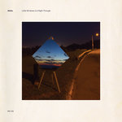
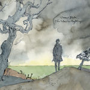
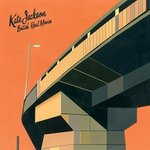
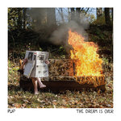
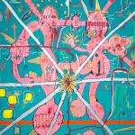

Quick Takes (May 2016)
The month of May certainly didn't overwhelm Carl and I as much as last month did, but it was still chock-full with important releases to whet our appetites until the summer begins. Carl was also significantly more generous - though he's completely enamored by James Blake's winning streak, I struggled to find nice things to say about Mutual Benefit and PUPs follow-up efforts. Maybe I was too busy being moody listening to Gorguts' ambitious metal opus. What were your favorite albums during the month of May? Anything we didn't get to review on our site that we should've? You can always reach us on facebook, or on our official twitter page. - Juan
...
Aloha
Little Windows Cut Right Through
(Polyvinyl)
For the past fifteen years, Ohio quartet Aloha has been busy flying under the radar with a certain allegiance to never repeat themselves. The changes have been minimal but significant, vacillating through a rapidly-advancing music industry without making any dramatic changes that would dishonor their dutiful modesty. Little Windows Cut Right Through serves as a perfect introduction for the uninitiated, ushering a colorful and sophisticated pop template that hosts a hummable set of anthemic indie rock with serried synthesizer patterns. There are echoes of their past work speckled throughout while taking on new avenues - they tackle the lucid, melancholic mid-tempo of Marigold and Ocean Street with typical ease, while the slick, sonic gleam of One Hundred Million aspires to resemble more of a charting indie pop hit with mixed results. Nevertheless, Aloha once again delivers a decadent sorting of aural pleasures, coming from a band whose successes are propelled by faultless chemistry and a passion to keep on going even if mainstream success continues to unfairly elude them. [7/10] Juan Edgardo Rodríguez
James Blake
The Colour in Anything
(Polydor)
James Blake surprised us with the release of his third LP last month, and his sound has barely changed over the three of them. But, calling it a ‘sound’ does it a disservice. Blake’s music is the introspective world he has created, very much like an author or a film writer concocts a world in which to tell their story. When listening to The Colour In Anything, particularly the more you listen to it and more time you invest in it, the intricacies of such a minimalist world reveal themselves more candidly. Opener Radio Silence sets the tone, and it is simply stunning, with a tear-jerkingly beautiful looping structure inviting you into a place where Blake’s anxious, soulful vocals can be heard. His voice is peerless, quietly adapted to his world of minimalist beats and ghostly electronics. The effect is stark, and intensely compelling. At 17 tracks long, this is a listen that plumbs substantial depths, but in Blake’s world, time ceases to be a constraint. [9/10 – Believe The Hype] Carl Purvis
Eagulls
Ullages
(PTKF)
Leeds five-piece Eagulls have cleverly used an anagram of their own name to title their 2nd LP, and their sound is a reshuffled take on the uneasy, furious punk blueprint found on their debut. The title gets even cleverer when considered that an ullage is the unfilled space in a container, perhaps alluding to the emptier, more inspirited sound heard in comparison to their debut. George Mitchell’s vocals still spearhead a concentrated angst, but the delivery is one of hopefulness, with more intricate guitars and a Smiths-esque method of conveying hardship coming to the forefront. The result is that Ullages displays a more conventional kind of beauty – one that spars with the dark undertones to act as a light at the end of a moody tunnel. In substituting the ferocity of their debut for positivity, Eagulls have constructed a very good record that is arguably better than their well-received debut. [7/10] Carl Purvis
Gorguts
Pleiades’ Dust
(Season of Mist)
Gorguts seem to misunderstand what should count as leftover material. The latest EP by the Canadian death metal institution was rigidly conceived as an overreaching thematic concept that is meant to be heard in one sitting, one which tells the story of the intellectual center House of Wisdom during the Islamic Golden Age. The 33-minute opus goes through a variety of movements, executed in a single, sweeping powerful statement that seamlessly transitions from impenetrable technicality to doomed, menacing ambience. Luc Lemay’s guttural utterances are in full display, channeling his tempered aggression as the story unfolds from hopeful enlightenment to its inevitable demise heralded by human futility. Gorguts are no strangers to ambition, always pushing themselves to find beauty in the darkest, most sinister tales of our checkered evolution. What’s most surprising, though, is that we finally get to witness a cast of players who can actually give the ever-shifting Gorguts name the treatment that it deserves. [8/10] Juan Edgardo Rodríguez
Kate Jackson
British Home Movies
(HooHa Records)
As part of dearly-missed English troupe The Long Blondes, lead singer Kate Jackson had a certain je ne sais quois about her. It didn’t hurt that her cheeky confidence was backed by an uncomplicated rock ensemble that had a surfeit of flair. You’d assume that Jackson would misfire after a semi-long absence (even longer if you factor that in Internet years) and yet she rises to the occasion as a solo artist with a fresh batch of songs that range everywhere from chanteuse orchestral pop to glammed-out ruckus. Jackson is a studied curator, one who chooses to perform under ageless musical styles that are fully buoyed with rollicking pep and bounce. As strong as the hooks and melodies are in British Home Movies, it’s her artful narratives and evocative choruses that really stick, enveloped in micro stories of traveling along paths that are paved with memories. And she makes every storied moment count. It’s good to have you back, Kate. [8/10] Juan Edgardo Rodríguez
 Kaytranada
Kaytranada
99.9%
(XL Recordings)
First things first: Louis Celestin’s debut LP is sublimely put together. It is edited to perfection, yet manages to stay both cohesive and disjointed all at once. From the outset, the excellently titled Track Uno flashes funk and soul beats through a Daft Punkish filter, before beats jump in and out of time throughout Bus Ride, expertly kept on their tethers by Celestin’s mixing prowess. By the time UK Garage Guru Craig David lends his silky vocals to Got It Good, it’s clear to see that 99.9% scoffs at the very notion of a genre. The record features a stellar list of collaborators including Aluna George, BADBADNOTGOOD and Syd Barrett amongst others, and with each collaboration the album’s sound becomes more and more colourful. The meshing of convulsive, skippy bass tracks with Technicolor soundscapes and felicitous collaborations really is exceptional. The album’s title suggests something close to perfection, and 99.9% isn’t too far from being the ideal electronic record. [8/10] Carl Purvis
 Mutual Benefit
Mutual Benefit
Skip a Sinking Stone
(Transgressive)
Jordan Lee first received some unexpected success after his debut effort, Love’s Crushing Diamond, made the rounds through the popular streaming platform Bandcamp. Considering the recent drought of elegiac folk music, which there’s even more of a lack of if it incorporates baroque instruments, it looks like Lee shouldn’t be concerned with trying to stand out on a crowded field. He’s something of a contemporary resurrect of Badly Drawn Boy at his most serene moments, if you will. But perhaps that also works to his detriment - Lee isn’t really taking any strides to really further his talents, as his latest, Skip a Sinking Stone, emulates Diamond with lulling acoustic flourishes that blend together to a point that they’re almost unrecognizable. Lee knows how to write songs that sound just splendid, elegant but never majestic, but they also tend to drown out his thoughtful experiences that relate to being a traveling musician. Lee’s music comes from a place that’s pure, completely at odds with his current urban environment, handled with loving precision; nevertheless, it also fails to resonate when he’s too wrapped up in his own insularity. [6/10] Juan Edgardo Rodríguez
PUP
The Dream is Over
(SideOneDummy)
We’re currently experiencing this shift in rock music where different variations of punk-pop are the new norm. It’s the new indie rock, but also not really. Even if the cream of the crop bands are bringing back a youthful excitement that goes beyond mid-thirties nostalgia, it’s also brought loads of immoderate, and unearned, flattery. Case in point: Canadians PUP, whose abrasive what fuckery desperately wants to be tough despite the occasional petulant complaints. Some of the hooks are too good to ignore: If This Tour Doesn’t Kill You, I Will and The Coast offer flailing guitars with propulsive rhythms that should rightfully raise a few fist pumps. Stephan Babcock is a determined performer, and his bandmates are suitable harmonizers, but even at a tight 30-minutes the album’s lack of strong melodic direction quickly turns tiresome with its stilted, colorless sonic onslaught. And that’s something no passionate chant or vehemently humorous self-hatred can save. [5/10] Juan Edgardo Rodríguez
Seratones
Get Gone
(Fat Possum)
Louisiana four-piece Seratones have produced a very good debut LP. Their brand of ragged, scuzzy blues rock - which lands somewhere between Alabama Shakes and turn-of-the-century White Stripes - is a cushy blend of quivering spirit and punky, garage-drenched rock ‘n’ roll. Frontwoman AJ Haynes is the main attraction, spearheading the band with a giant voice that oozes soul. Haynes learned to sing in a church choir from a young age, and her ecclesiastical background is hugely prominent in both the moments where her voice soars, and where it croons and caresses the band’s deliciously retro sound. Get Gone is a superbly well-rounded record, showcasing an array of strings to Seratones’ bow. From the saucy R’n’B of Tide and Chandelier, the frenetic Choking on Your Spit to the gorgeous, laid-bare swoon of Keep Me, Get Gone is an expertly accomplished piece of work from a band still fledgling in their career. [8/10] Carl Purvis
Yak
Alas Salvation
(Kobalt/Octopus Electrical)
Now and again, a rock band release a debut LP that gets people excited about music’s most sweeping genre all over again. It doesn’t matter that it’s nothing new because it’s always refreshing, and Alas Salvation will have red meat lovers salivating profusely over the rawness and precision of its onslaught. The album is powered throughout by a ridiculously sludgy bass guitar that steamrolls its way through its course, and that juxtaposition with a treble-free, bass-heavy guitar even goes far enough to recall the scorching tones of Kyuss and Fu Manchu – no more so than on third track Use Somebody. The songs of Alas Salvation launch you headlong into the next one, packing a bruising punch without allowing for a pause for breath. Stoner-rock meshes with glam-punk in short, piercing bursts, never allowing the influences to make an impression greater than the one that Yak themselves are thrusting menacingly into your face. Yak haven’t reinvented the wheel, but their work is invigorating in its own right. [7/10] Carl Purvis
7 June, 2016 - 19:36 — No Ripcord Staff